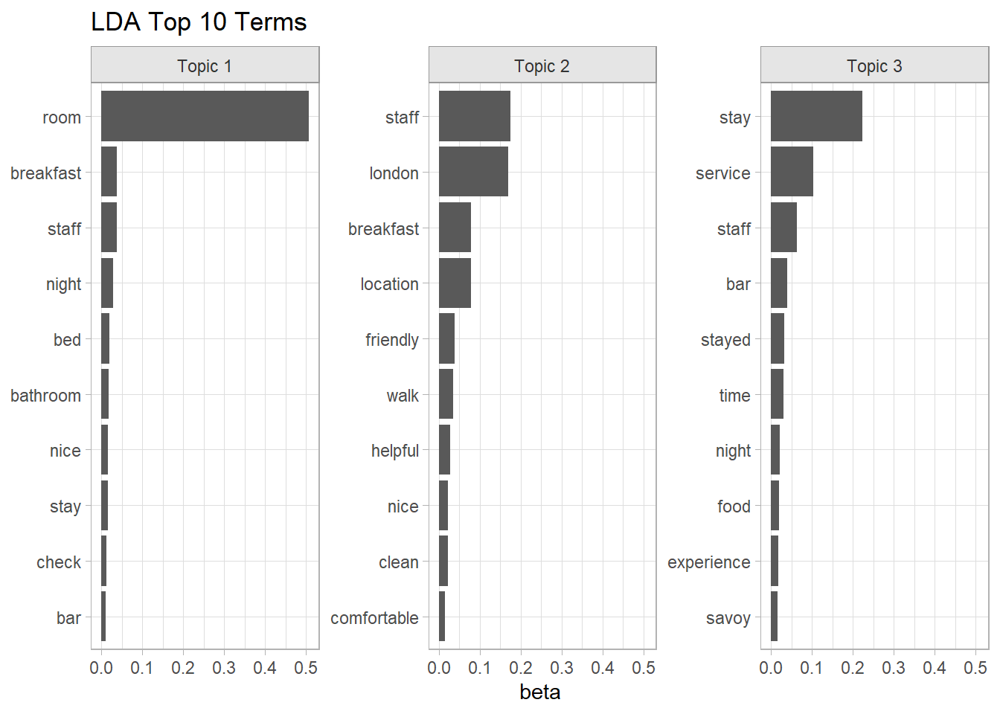
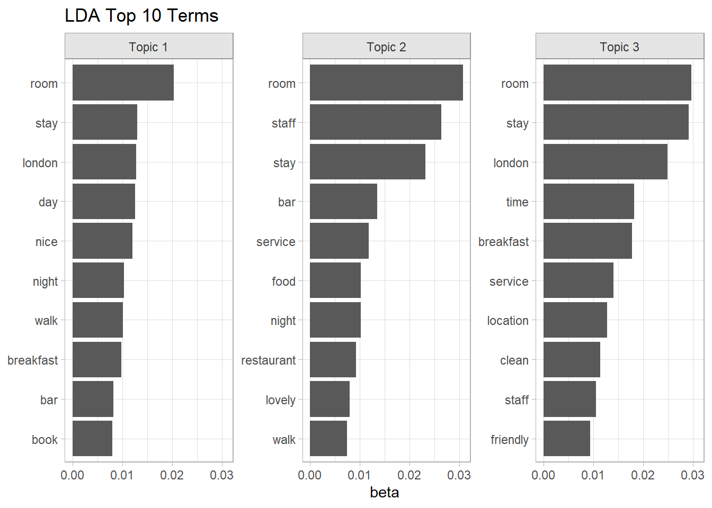
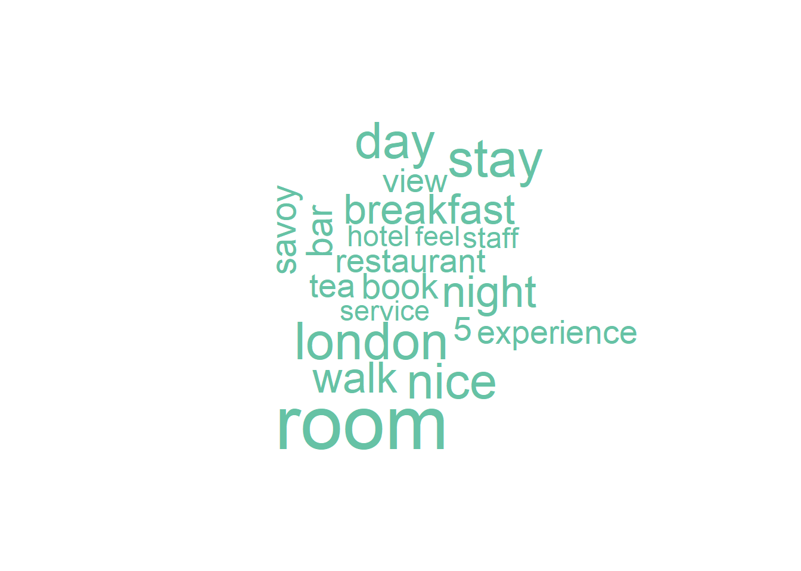

3.2 Polarity Scoring
You can use three packages to measure text polarity. The simplest method is using tidytext. You transform your text into one-row per word with unnest_tokens(), join to one of the sentiment lexicons, and add up the positives and negatives. The polarity score is the net of positive - negative. qdap is more sophisticated. It takes into account valence shifters, surrounding words that change the intensity of a sentiment (e.g., “very”) or switch its direction (e.g., “not”).
3.2.1 tidytext
The tidy way to score polarity is tagging individual words as “positive” and “negative” using the bing lexicon, then defining polarity as difference in counts. In principle, you ought to be able to use the positive|negative subset of NRC, or create weighted counts using AFINN. The qdap and sentimentr packages also correct for text length. A wordy review using twice as many positives as negatives shouldn’t score twice as positive. Those packages divide by \(\sqrt{n}\) to reduce the impact of word count (longer reviews are still more emotional, just less so).
Another “improvement” I employ below is capturing the words that registered as positive an negative. This is useful for explaining how the polarity score was calculated. I also attached the results back to the original data frame with an outer join since not all reviews would necessarily have any sentiment words (but they did). This leaves me with the original data, plus all my polarity metadata.
hotel_tidy <- hotel %>%
select(review_id, review_text) %>%
unnest_tokens(output = "word", input = review_text)
hotel_wordcount <- hotel_tidy %>%
count(review_id)
hotel_tidy_polarity_1 <- hotel_tidy %>%
inner_join(get_sentiments("bing"), by = "word") %>%
group_by(review_id, sentiment) %>%
summarize(.groups = "drop",
n = n(),
words = list(word)) %>%
pivot_wider(names_from = sentiment, values_from = c(n, words), values_fill = list(n = 0))## Warning in inner_join(., get_sentiments("bing"), by = "word"): Detected an unexpected many-to-many relationship between `x` and `y`.
## ℹ Row 748865 of `x` matches multiple rows in `y`.
## ℹ Row 5608 of `y` matches multiple rows in `x`.
## ℹ If a many-to-many relationship is expected, set `relationship = "many-to-many"` to silence this
## warning.hotel_tidy_polarity_bing <- hotel %>%
left_join(hotel_wordcount, by = "review_id") %>%
left_join(hotel_tidy_polarity_1, by = "review_id") %>%
mutate(polarity_score = (n_positive - n_negative) / sqrt(n),
polarity_desc = if_else(polarity_score >= 0, "Positive", "Negative"))Out of curiosity, I’ll try this with AFINN too.
hotel_tidy_polarity_2 <- hotel_tidy %>%
inner_join(get_sentiments("afinn"), by = "word") %>%
group_by(review_id) %>%
summarize(.groups = "drop",
sentiment = sum(value),
words = list(word))
hotel_tidy_polarity_afinn <- hotel %>%
left_join(hotel_wordcount, by = "review_id") %>%
left_join(hotel_tidy_polarity_2, by = "review_id") %>%
mutate(polarity_score = sentiment / sqrt(n),
polarity_desc = if_else(polarity_score >= 0, "Positive", "Negative"))How should we present these results? One way is to treat polarity as the numeric measure and group by the factor variable property_name. Here are my Bing results.
hotel_tidy_polarity_bing %>%
group_by(property_name) %>%
mutate(median_polarity = median(polarity_score, na.rm = TRUE)) %>%
ungroup() %>%
arrange(median_polarity) %>%
ggplot(aes(x = fct_inorder(property_name), y = polarity_score)) +
geom_jitter(width = 0.2, alpha = 0.3, color = "#5DA5DA", size = 1) +
geom_boxplot(alpha = 0) +
geom_hline(yintercept = 0, linetype = "longdash", color = "#60BD68", size = 1.25) +
coord_flip() +
theme_minimal() +
labs(title = "Few Reviews for a Reason?",
subtitle = "Hotels with few reviews tend to have negative reviews.",
x = NULL, y = "Sentiment Polarity Score",
caption = "Bing Polarity = (n_pos - n_neg) / sqrt(n_words)")
And here is is with AFINN.
hotel_tidy_polarity_afinn %>%
group_by(property_name) %>%
mutate(median_polarity = median(polarity_score, na.rm = TRUE)) %>%
ungroup() %>%
arrange(median_polarity) %>%
ggplot(aes(x = fct_inorder(property_name), y = polarity_score)) +
geom_jitter(width = 0.2, alpha = 0.3, color = "#5DA5DA", size = 1) +
geom_boxplot(alpha = 0) +
geom_hline(yintercept = 0, linetype = "longdash", color = "#60BD68", size = 1.25) +
coord_flip() +
theme_minimal() +
labs(title = "Few Reviews for a Reason?",
subtitle = "Hotels with few reviews tend to have negative reviews.",
x = NULL, y = "Sentiment Polarity Score",
caption = "AFINN Polarity = sentiment / sqrt(n_words)")
Not too different. 2 of the top 3 are the same. The bottom 4 are the same group, just shuffled. Savoy fared better in AFINN than in Bing.
The data set includes a numeric rating review_rating (1-5). Does the polarity score reveal anything that the numeric rating doesn’t already tell you?
hotel_tidy_polarity_bing %>%
filter(!is.na(polarity_score)) %>%
ggplot(aes(x = as_factor(review_rating), y = polarity_score)) +
geom_jitter(width = 0.2, alpha = 0.3, color = "#5DA5DA", size = 1) +
geom_boxplot(alpha = 0) +
theme_minimal() +
labs(title = "Few Reviews for a Reason?",
subtitle = "Hotels with few reviews tend to have negative reviews.",
x = NULL, y = "Sentiment Polarity Score",
caption = "Polarity = (n_pos - n_neg) / sqrt(n_words)")
Most reviews are positive - even for 2-rated hotels. While sentiment does increase with review rating, there are plenty of reviews with a rating of 5 and a polarity score <0. Let’s dig into that a little.
Here is a 1-rated review with a decent polarity score.
hotel_tidy_polarity_bing %>%
filter(review_rating == 1) %>%
slice_max(polarity_score) %>%
select(polarity_score, review_text) %>%
flextable() %>% autofit()polarity_score | review_text |
|---|---|
0.8728716 | Stayed here many times both for business and pleasure, alone, with my wife and even with extended family and children. It is in fact impossible to seperate the business and pleasure stays because everytime was a breathtakingly delectable pleasure. Meeting friends and colleagues whether in the lobby one of the resturants always left an impressive memorable impression. Alas, I haven't been able to visit again for sometime - either fully booked or are not able to guarantee convenient parking for my personal chauffeur and car. |
Well, that is amusing - I the reviewer treating the rating as a kind of ranking (first place!). How about a 5-rating with negative sentiment?
hotel_tidy_polarity_bing %>%
filter(review_rating == 5) %>%
slice_min(polarity_score) %>%
select(polarity_score, review_text) %>%
flextable() %>% autofit()polarity_score | review_text |
|---|---|
-0.70014 | Some design faults in the bathroom - no stool, misplaced grab handles and vanity mirror. | Very disappointing experience in Savoy Grill. Good quality ingredients but poorly presented and tasteless. Numerous mistakes in service including charging for expensive drinks which we did not have. Service charge revoked and booking for following night cancelled. | |
Again, I think they got it backwards.
The polarity scoring can reveal why some hotels rated worse by looking at the words used. (this plot di not come out well).
hotel_tidy_polarity_bing %>%
mutate(review_rating = as.factor(review_rating)) %>%
filter(!is.na(polarity_desc)) %>%
select(!c(words_positive, words_negative)) %>% # no lists allowed
unnest_tokens("word", review_text) %>%
anti_join(stop_words, by = "word") %>%
filter(!str_detect(word, "[0-9]")) %>%
filter(!word %in% c("hotel", "stay", "night", "london")) %>%
count(review_rating, polarity_desc, word) %>%
group_by(review_rating, polarity_desc) %>%
slice_max(order_by = n, n = 8, with_ties = FALSE) %>%
mutate(n = if_else(polarity_desc == "Negative", -n, n),
word = paste0(if_else(polarity_desc == "Negative", "-", "+"), word)) %>%
ungroup() %>%
arrange(review_rating, n) %>%
ggplot(aes(x = fct_inorder(word), y = n, fill = polarity_desc, color = polarity_desc)) +
geom_col(alpha = 0.6) +
facet_wrap(~as.factor(review_rating), scales = "free") +
scale_fill_few() +
scale_color_few() +
coord_flip() +
theme_minimal() +
theme(legend.position = "top") +
labs(title = "Top Words by review type", y = "Word Count", x = NULL,
fill = NULL, color = NULL)
Word clouds are a nice way to get an overview of the data.
hotel_tidy_polarity_bing %>%
unnest_tokens(output = "word", input = review_text) %>%
anti_join(stop_words, by = "word") %>%
filter(!str_detect(word, "[0-9]") & !is.na(polarity_desc)) %>%
filter(!word %in% c("hotel", "stay", "night", "london")) %>%
count(word, polarity_desc, wt = n) %>%
pivot_wider(names_from = polarity_desc, values_from = n, values_fill = 0) %>%
data.table::data.table() %>%
as.matrix(rownames = "word") %>%
wordcloud::comparison.cloud(max.words = 20, title.size = 1.5)## Warning in wordcloud::comparison.cloud(., max.words = 20, title.size = 1.5):
## breakfast could not be fit on page. It will not be plotted.## Warning in wordcloud::comparison.cloud(., max.words = 20, title.size = 1.5):
## amazing could not be fit on page. It will not be plotted.## Warning in wordcloud::comparison.cloud(., max.words = 20, title.size = 1.5):
## wonderful could not be fit on page. It will not be plotted.## Warning in wordcloud::comparison.cloud(., max.words = 20, title.size = 1.5):
## restaurant could not be fit on page. It will not be plotted.
3.2.2 sentimentr
sentimentr calculates polarity at the sentence level. It improves on tidytext in that it takes into account the context in which the sentiment words occur, that is, the valence shifters.
- A negator flips the sign of a polarized word (e.g., “I do not like it.”). See
lexicon::hash_valence_shifters[y==1]. - An amplifier (intensifier) increases the impact (e.g., “I really like it.”). See
lexicon::hash_valence_shifters[y==2]. - A de-amplifier (downtoner) reduces the impact (e.g., “I hardly like it.”). See
lexicon::hash_valence_shifters[y==3]. - An adversative conjunction overrules the previous clause containing a polarized word (e.g., “I like it but it’s not worth it.”). See
lexicon::hash_valence_shifters[y==4].
sentimentr uses a lexicon package combined from the syuzhet and lexicon packages. Positive words are scored +1 and negative words are scored -1. sentimentr identifies clusters of words within sentences of the text. The 4 words before and 2 words after are candidate valence shifters. Polarized words are weighted by the valence shifter weights: negators = -1; amplifiers and de-amplifiers = 1.8; adversative conjunctions decrease the value of the prior cluster and increase the value of the following cluster. Neutral words hold no value, but do affect the word count.
hotel_sentr_polarity_1 <- hotel %>%
mutate(sentences = get_sentences(review_text)) %$%
sentiment_by(sentences, review_id)
hotel_sentr_polarity <- hotel %>%
left_join(hotel_sentr_polarity_1, by = "review_id") %>%
mutate(polarity_desc = if_else(ave_sentiment >= 0, "Positive", "Negative"))Here is the chart treating polarity as the numeric measure and group by the factor variable property_name.
hotel_sentr_polarity %>%
group_by(property_name) %>%
mutate(median_polarity = median(ave_sentiment, na.rm = TRUE)) %>%
ungroup() %>%
arrange(median_polarity) %>%
ggplot(aes(x = fct_inorder(property_name), y = ave_sentiment)) +
geom_jitter(width = 0.2, alpha = 0.3, color = "#5DA5DA", size = 1) +
geom_boxplot(alpha = 0) +
geom_hline(yintercept = 0, linetype = "longdash", color = "#60BD68", size = 1.25) +
coord_flip() +
theme_minimal() +
labs(title = "Few Reviews for a Reason?",
subtitle = "Hotels with few reviews tend to have negative reviews.",
x = NULL, y = "Sentiment Polarity Score",
caption = "Sentimentr Polarity")
Here, Xenia came out on top.
The data set includes a numeric rating review_rating (1-5). Does the polarity score reveal anything that the numeric rating doesn’t already tell you?
hotel_sentr_polarity %>%
filter(!is.na(ave_sentiment)) %>%
ggplot(aes(x = as_factor(review_rating), y = ave_sentiment)) +
geom_jitter(width = 0.2, alpha = 0.3, color = "#5DA5DA", size = 1) +
geom_boxplot(alpha = 0) +
theme_minimal() +
labs(title = "Few Reviews for a Reason?",
subtitle = "Hotels with few reviews tend to have negative reviews.",
x = NULL, y = "Sentiment Polarity Score",
caption = "Polarity = (n_pos - n_neg) / sqrt(n_words)")One nice feature of sentimentr is that it creates a highlighted text based on sentiment score (green = positive, red = negative).
3.2.3 qdap
qdap::polarity(text.var, grouping.var = NULL) calculates the polarity score for each character string text.var, grouping by optional character vector grouping.var. polarity uses the sentiment dictionary to tag polarized words. It considers a context cluster of words around polarized words as valence shifters (neutral, negator, amplifier, or de-amplifier). Neutral words hold no value but do affect word count. polarity applies the dictionary weights to each polarized word and then further weights by the number and position of the valence shifters. Last, it sums the context cluster and divides by the square root of the word count, yielding an unbounded polarity score.
# hotel_sentr_polarity <- hotel %>%
# mutate(sentences = get_sentences(review_text)) %>%
# sentiment_by(sentences, list(review_id))
# hotel_qdap_polarity <- hotel %$%
# polarity(review_text, review_id)
#
# scores(hotel_qdap_polarity)The counts() function returns one row for each line of text. It includes a list of the positive and negative words that contribute to the polarity score. Line 57 has a polarity score of zero because it has a pair of positive and negative words.
# sawyer[57,]
# counts(sawyer_tm_polarity)[57,]
# counts(sawyer_tm_polarity)[57, c("pos.words", "neg.words")] %>% unlist()Oh, but wait - Twain doesn’t use mighty as a positive adjective, but rather, as an amplifier adverb. Mighty appears sawyer %>% filter(str_detect(text, "mighty")) %>% nrow times in Tom Sawyer. We should remove it from the polarity.frame and add it to the amplifiers.
# custom_frame <- sentiment_frame(
# positives = qdapDictionaries::positive.words[qdapDictionaries::positive.words != "mighty"],
# negatives = qdapDictionaries::negative.words
# )
#
# sawyer_tm_polarity_2 <- sawyer %>%
# mutate(text = str_remove_all(text, "\\_")) %$%
# polarity(
# text, chapter,
# polarity.frame = custom_frame,
# amplifiers = sort(c(qdapDictionaries::amplification.words, "mighty"))
# )
#
# counts(sawyer_tm_polarity_2)[57,] Something is still wrong here. It removed mighty as a positive word, but did not apply it as amplifier. It seems to be confused by the presence of the comma in “tomorrow, to punish”. I’ll drop the matter for now, but perhaps how we parse the data into rows makes a difference. It also advises that you run SentSplit() on the data first, but the function never stopped running, so I abandoned it.
Here is a plot of the polarity results.
Chapter 22 had the lowest polarity score and chapter 34 the highest.
# sawyer_tm_polarity_2 %>%
# scores() %>%
# mutate(chapter = as.integer(chapter)) %>%
# ggplot(aes(x = chapter, y = ave.polarity)) +
# geom_point() +
# geom_segment(aes(x = chapter, xend = chapter, y = 0, yend = ave.polarity)) +
# geom_smooth() +
# geom_hline(yintercept = 0, color = "red") +
# theme_minimal() +
# labs(title = "Adventures of Tom Sawyer Chronological Polarity")Create to strings, one with the positive chapters, and one from the negative chapters.
# sawyer_poloarity_pos <- sawyer_tm_polarity_2$all %>%
# filter(polarity > 0) %>%
# pull(text.var) %>%
# paste(collapse = " ")
#
# sawyer_poloarity_neg <- sawyer_tm_polarity_2$all %>%
# filter(polarity < 0) %>%
# pull(text.var) %>%
# paste(collapse = " ")
#
# sawyer_polarity_tdm <- c(sawyer_poloarity_pos, sawyer_poloarity_neg) %>%
# VectorSource() %>%
# VCorpus() %>%
# TermDocumentMatrix(control = list(weighting = weightTfIdf,
# removePunctuation = TRUE,
# stopwords = stopwords(kind = "en")))Often authors will use more words when they are more passionate. Lengthy reviews may inflate overall sentiment since the reviews will inherently contain more positive or negative language as the review lengthens.